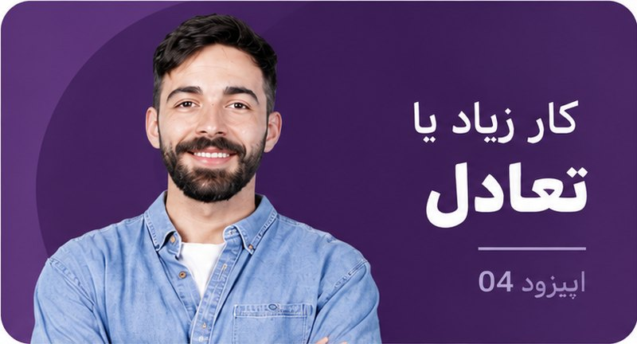

فیلم این اپیزود بهزودی در همین بخش قرار میگیرد.
کار زیاد یا تعادل اپیزود 04
در جهانی که سرعت رشد، رقابت و بهرهوری از همیشه بیشتر شده، مرز بین تلاش و فرسودگی روزبهروز محوتر میشود. پادکست «کار زیاد یا تعادل» جایی است برای گفتوگو دربارهی همین مرز باریک — بین موفقیت حرفهای و سلامت ذهنی.
در هر قسمت، دربارهی موضوعاتی حرف میزنیم که همهی ما در مسیر شغلی با آن درگیر هستیم: از فشار کاری و احساس ناکافی بودن، تا پیدا کردن معنا در کار و ساختن تعادل واقعی میان شغل و زندگی شخصی.
اینجا داستان آدمهایی را میشنوید که یا در دام کار زیاد افتادند، یا توانستند راهی برای رسیدن به آرامش و رضایت پیدا کنند.
«کار زیاد یا تعادل» دعوتی است به فکر کردن دوباره دربارهی این سؤال ساده و سخت:
آیا بیشتر کار کردن همیشه به معنای پیشرفت است؟
یا شاید وقتش رسیده که تعادل را دوباره تعریف کنیم.